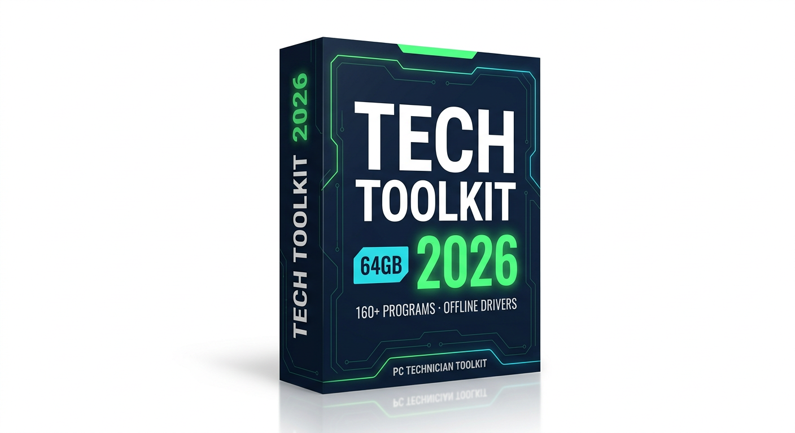
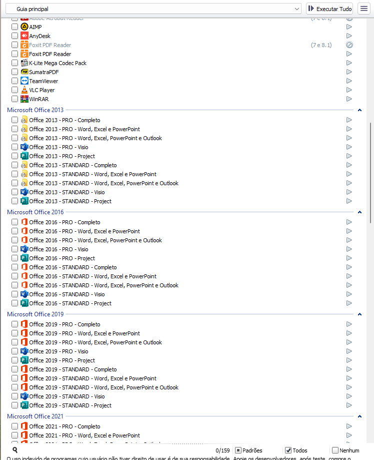
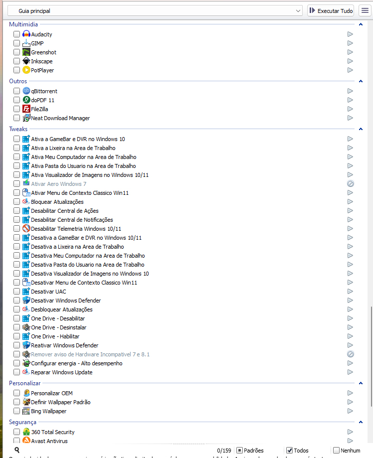
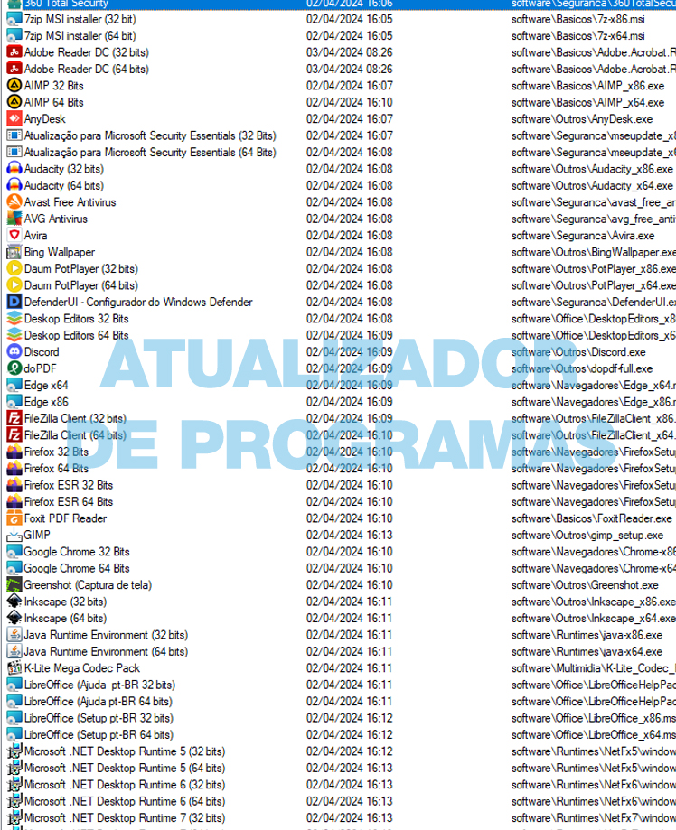
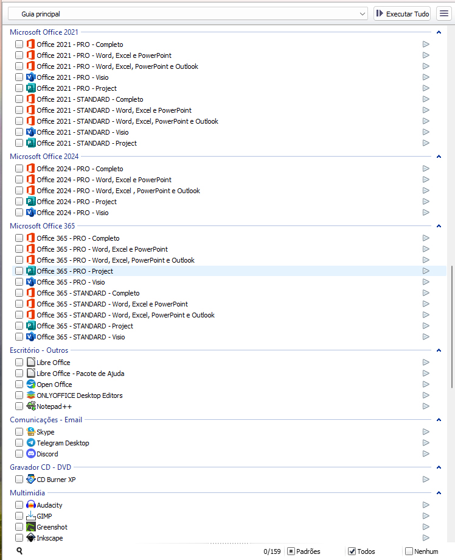
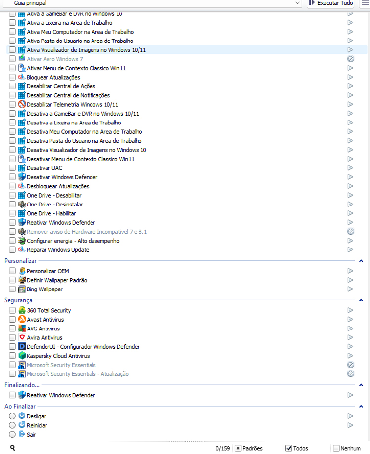

Installing programs one by one
Open a browser, find the installer, click through setup, repeat 15–20 times. That is an hour of clicking — not repair work.
Built for PC repair shops & IT technicians
Tech Toolkit 64GB 2026 batch-installs 160+ programs in one click and sets up offline drivers the moment you finish a format. Stop hunting for installers and fighting with missing network drivers. Bill more machines with the same crew.
One-time payment · Instant download · Windows 10 & 11 · Commercial use allowed

Most shops lose the same hour on every single machine. The Toolkit removes the busywork so you can close more jobs per day.
Open a browser, find the installer, click through setup, repeat 15–20 times. That is an hour of clicking — not repair work.
The machine has no internet until the NIC driver is in, so you are downloading drivers on another PC and passing them by USB.
The build you copied months ago is already outdated. Clients leave with old software and known bugs.
Longer turnarounds mean fewer machines repaired per day, and word of mouth about "the shop that takes two days".
Tick the programs you want and let the installer run the whole queue unattended. No clicking through setup wizards one by one.
A dedicated panel detects the hardware and installs chipset, network, audio and video drivers without touching the internet.
Browsers, Office 2013–2024 / 365, PDF readers, antivirus, archivers, media tools, remote access and everyday utilities.
A panel inside the toolkit pulls the latest installer versions for you, so the USB stick never goes stale in the drawer.
Restore desktop icons, apply high-performance power plans, clean temp files and repair Windows Update — one click each.
Nothing is installed on your own machine. Copy the folder to a 64 GB flash drive and work on any bench, any client.
Everything is sorted by category inside a single launcher. Pick a category, tick the boxes, hit run.
Chrome, Firefox, Edge, Opera, Telegram, WhatsApp, Discord, Skype, remote access tools.
Microsoft Office 2013 → 2024 and Office 365 packages, LibreOffice, OpenOffice, ONLYOFFICE, Notepad++.
Foxit Reader, Adobe Reader, SumatraPDF, doPDF and other document tools.
Antivirus and cleanup utilities, plus Windows security and update repair shortcuts.
VLC, PotPlayer, Audacity, GIMP, Inkscape, K-Lite codec pack, disc and screen tools.
7-Zip, WinRAR, FileZilla, download managers, benchmarks, drivers and diagnostic helpers.
Desktop and explorer shortcuts, power plans, OneDrive control, context menu, update repair.
Motherboard, chipset, network, Wi-Fi, Bluetooth, audio and video drivers detected automatically.
The Toolkit ships installers for legitimate, freely distributed or trial software. It does not include cracks, activators or pirated licenses — you install and license software the proper way for your client.
The program launcher, the offline driver panel and the updater — all organised by category.




See which installers have new versions and pull the fresh ones with one click — your stick stays current.

Screenshots show the current packaged build, whose interface labels are in Portuguese. Program names, Windows itself, the drivers and the installed software are unaffected — they run in your client's language. We are happy to walk you through an English walkthrough before you buy: email us.
A quick look at the automated install and the driver panel in action.
Interface language depends on the build shown in the video.
| Doing it by hand | Tech Toolkit | |
|---|---|---|
| Installing the software | One installer at a time, clicking through every wizard | Tick a list, run the batch queue |
| Drivers right after a format | No network card driver, so no way to download the rest | Offline driver pack installs first — connectivity restored |
| Keeping installers fresh | Re-download everything by hand, every few months | Built-in updater fetches new versions with a click |
| Time per machine | Roughly an hour of babysitting | Queue it and do other work while it runs |
| Cost | Your hourly rate × every job | $12 once, unlimited machines |
Instant digital delivery
One payment. Every program, every driver panel, all future updates and access to the setup tutorials.
7-day money-back guarantee Secure checkout Instant download link by e-mail
Need to invoice a company or pay another way? Write to support before ordering.
Delivery is 100% digital. As soon as the payment is confirmed, you get an e-mail with the download links and your access details — usually within a couple of minutes. No shipping, no waiting for a package.
The full package is built to live on a 64 GB USB flash drive (an external SSD or hard drive works too). You download the files, extract them and copy the folder to the drive — a video walkthrough in the members area shows every step.
Yes. The offline driver pack covers motherboards, chipsets, network, Wi-Fi, Bluetooth, audio and video. That is exactly the moment when a machine has no connection, and it is handled without a second computer on the bench.
The Toolkit is built for Windows 10 and Windows 11 (64-bit), and many tools still work on Windows 7 machines you may get in for repair. It runs from the USB drive, it is not installed on your own PC.
Yes — it is made for repair shops, freelancers and help-desk techs. Use it on as many machines as you want, for as long as you want. There is no per-machine or monthly fee.
Yes. The built-in updater lists every application with its last update date and lets you download the newest installer straight from the panel. Future updates are included at no extra cost.
No. The Toolkit only packages installers for legitimate, freely distributed or trial software and drivers. Licensing the software for your client is handled normally, the right way.
Write to our support with the e-mail address you used at checkout — we can find your order quickly and resend the links. Support also helps with extraction and USB preparation.
Still deciding? The assistant in the corner answers questions about price, delivery, compatibility and installation — instantly.
Get the Toolkit — $12